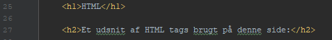
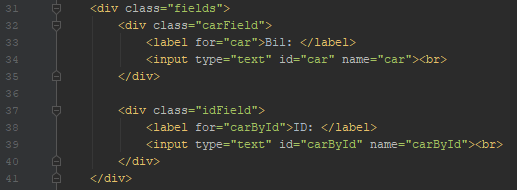
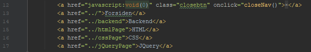
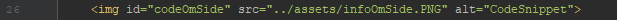
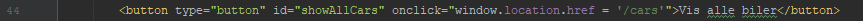

| Tags |
Beskrivelse |
| h1 |
Et af mange header tags der bruges til overskrifter og underoverskrifter |
| div |
Bruges til at definere en sektion af et HTML dokument. Kan nemt styles med CSS, når man tildeler div tagget et id eller class |
| a |
Et Anchor tag bruges til at definere et hyperlink med href attributen |
| img |
Et img tag bruges til at vise et billede med src attributen. Alt attributten bruges til at indsætte en tekst såfremt billedet ikke kan vises |
| input |
Input tagget bruges til at give brugeren en mulighed for at angive data. Type attributten kan bruges til at angive hvilken slags input der skal vises |
| label |
Label tagget kan bruges til at definere et label ved elementer. I dette tilfælde er label tagget brugt med et input felt |
| button |
Button tagget er ret selvforklarende da det bruges til at definere en knap på siden |




